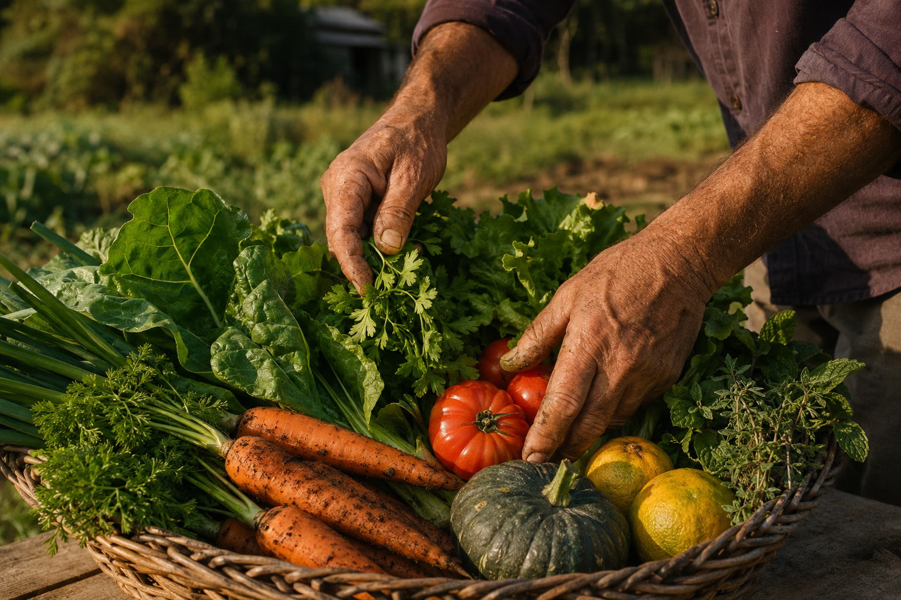

Escolha na feira
Veja o que foi colhido na semana e monte sua cesta.
Produtos orgânicos
Frutas, verduras e cestas orgânicas de famílias produtoras. Com origem conhecida, preço justo e menos desperdício.

Feira da semana
Disponibilidade das famílias parceiras. O cardápio muda com a estação, exatamente como a natureza.
A parceria entre o Agrolink, o Governo do Rio Grande do Sul e a FETAG-RS nasce de um compromisso comum: valorizar a agricultura familiar e aproximar quem produz de quem consome. Unimos esforços para dar visibilidade aos produtores locais, incentivar o consumo consciente e fortalecer os laços entre o campo e a cidade. Porque, por trás de cada alimento, há uma família, uma história e o cuidado com a nossa terra.
Conheça nossa redeSimples e transparente
Um caminho curto preserva o frescor e deixa mais valor com quem produz.
Veja o que foi colhido na semana e monte sua cesta.
Saiba qual família cultivou e em qual município.
Pix após confirmação ou pagamento na entrega, sem surpresa.
Entregas refrigeradas às quartas e aos sábados.
Menos desperdício
A demanda chega antes da colheita. Assim, as famílias planejam melhor, reduzem perdas e entregam alimentos naturalmente mais frescos.